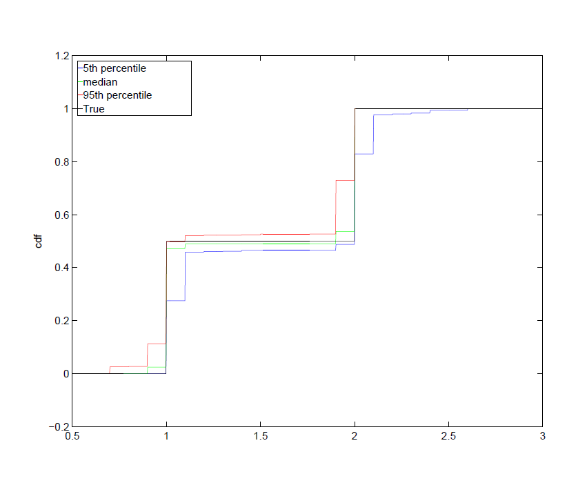

Random Matrix Theory
Matrix-valued random variables, also known as random matrices, play a central role in Statistics. Notably, sample covariance matrice is a random matrix which is a fundamental object in a veriety of statistics procedures, including hypothesis testing, discriminant analysis, principal component analysis, regression analysis, estimation, and prediction, to name a few. A mjority of these priblems can be categorized into two groups. The first group involves the eigen-analysis of a signle random symmetric matrix, often refereed to as a "single Wishart problem, such as PCA and test for population covariance matrices in one-sample problems. The second group of inference problems involves analyses of statistics that can be characterized in terms of the eigenvalues of the "ratio" of two independent symmetric covariance-type matrices of the same dimension, and is often referred to as a double Wishart problem. Multivariate analysis of variance (MANOVA), canonical correlation analysis (CCA), tests for equality of covariance matrices, and tests for linear hypotheses in multivariate linear regression are a few examples of hte double Wishart problems.
Despite the advances in the theory and application of random matrix theory in the fixed dimension and in verious asymptotic regims where it alows either of the dimension or the sample size diverges to infinity while the other is held fixed or the asymptotic regim where both the dimension and sample size can grow to infinity, many problems have remaind unexplored. One area that is of my interest is the eigen-analysis of covariance type matrices, e.g. spectral density matrices and auto-covariance matrices, of high dimensional time series. The extra complication in the analysis comes from the temporal dependence structure that makes the analysis of the underlying random matrices more challenging.
For more on the recent advances in random matrix theory and its applications to high-dimensional linear models please refer to the review paper below.
Spectral estimation for high-dimensional linear processes
This work is concerned with developing estimation for a class of high dimensional linear processes by means of estimating eigenvalue distributions of the coefficient matrices and the covariance matrix of the innovations. The process being considered is of the form , where are i.i.d., -dimensional random vectors with zero mean, and the coefficient matrices and Var are digaonalizable in a common orthonormal basis. Under this setting, we first established a Marenko-Pastur type limiting distribution for a weighted integral of the sample spectral density matrix under the asymptotic framework (referred to as the HD setting) that . We then utilized this result to develop a nonparametric estimate of the spectral distribution of coefficient matrices and the covariance matrix of the innovations of the linear process, and respectively. This contribution is important as it is needed for the large sample analysis of autocovariance matrices. This result is in particular useful in constructing high-dimensional diagnostic tests for the presence of correlation in data, determining the order of a high-dimensional time series, and estimating the spectrum of the population autocovariance matrices, to name a few. In addition, we develop a bootstrap based model selection procedure to identify the best model among candidate models that satisfy certain regularity assumptions.
Figures below show the result of a simulation study where the estimate of and were obtained by minimizing the distance between the limiting and empirical Stieltjes transforms of appropriate random matrices studied in this work. The linear process considered in the simulation study is an AR(1), , where are independent for . The AR coefficient matrix has two distinct eigenvalues with equal weights and the covariance matrix of the innovations also has two distinct eigenvalues with equal weights. In this study and and the distance is considered. Plots show the median and confidence band for the spectral cdf of the coefficient matrix and .
Sigma
Our application of the proposed methodology to log-transformed stock prices from the S&P 500 series shows the presence of temporal dependence structure among the stocks that goes beyond the dominant factor structure and is not apparent at the level of individual stocks.
Future Work
I have been thinking about three important and related problems in the HD setting without sparsity structure. (1) Extension of my results to a class of linear processes with simultaneous block diagonal coefficient matrices, (2) estimation of the spectral density matrices and the (auto)covariance matrices by means of shrinkage estimation, and (3) prediction